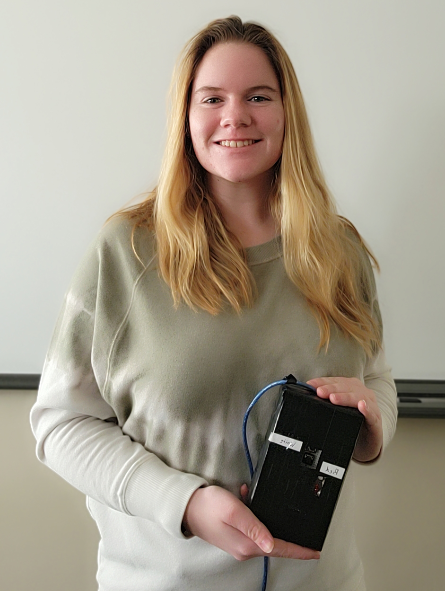
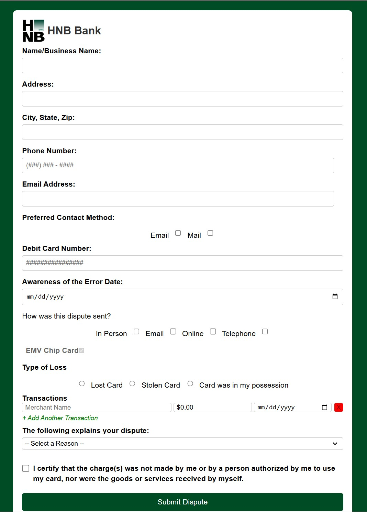
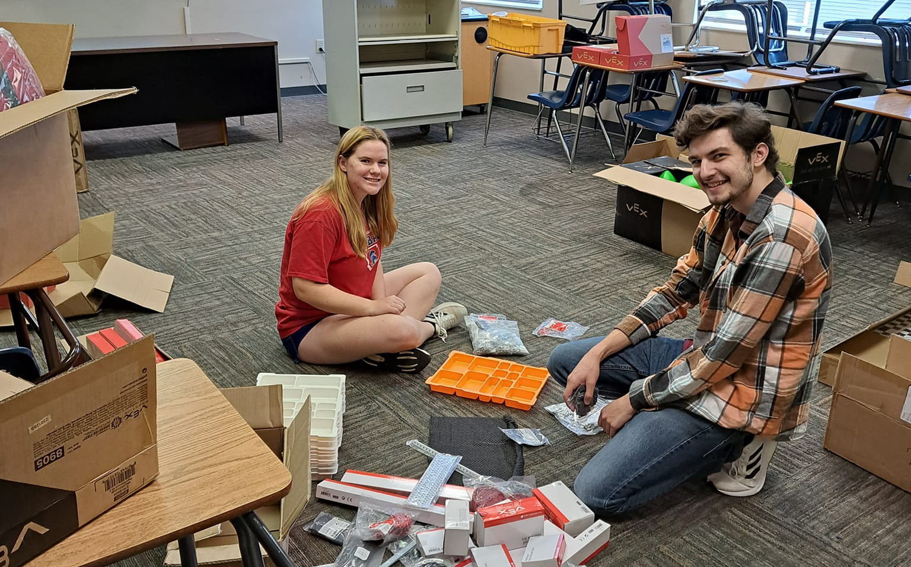

About Me
I am a results-driven Computer Science student at Hannibal-LaGrange University with a strong foundation in networking, system management, and web development. My academic journey is complemented by practical experience gained through internships and hands-on projects, fueling my passion for technology.
Passionate about web development and continuously expanding my technical skills, I thrive in collaborative environments. My goal is to leverage my technical expertise and problem-solving abilities within a supportive and driven team, contributing to innovative projects while growing professionally. I'm eager to apply my skills in a dynamic organization where I can learn and make a meaningful impact.
My studies at HLGU and project work have allowed me to explore diverse areas like cybersecurity, database management, and full-stack development. I particularly enjoy creating user-friendly interfaces and optimizing system performance, aiming to bridge the gap between technical complexity and practical application.
Personal Growth & Leadership
Teamwork & Discipline: Lessons from College Softball
As a dedicated college softball athlete, I've learned invaluable lessons that extend far beyond the field. The sport has instilled in me a strong sense of discipline, time management, and the importance of perseverance through challenges. Working closely with teammates towards a common goal has honed my collaboration and communication skills, teaching me how to contribute effectively within a team dynamic, celebrate shared successes, and learn from setbacks – qualities I bring to every technical project and team environment.
Internship Takeaways: Adaptability & Continuous Improvement
My internship experiences, particularly at HLGU's Office of Computer Services, provided significant personal and professional growth. Tackling diverse tasks like hardware troubleshooting, SharePoint development, and key management required flexibility and a readiness to learn new tools quickly. I learned the importance of clear communication when assisting users with technical issues and the value of proactive problem-solving. Reflecting on these experiences, I identified strengths in collaboration and adaptability, while also recognizing areas for continued development, such as deepening my expertise in complex diagnostics and enhancing proactive communication in ambiguous situations. These insights drive my commitment to continuous learning in the ever-evolving field of computer science.
Bridging Theory and Practice
Moving from theoretical concepts learned in the classroom to applying them in real-world scenarios during internships and projects has been a key part of my growth at HLGU. Whether it's designing a database, building a website, troubleshooting network issues, or constructing a PC from scratch, I value the opportunity to translate knowledge into tangible results and practical solutions. This hands-on approach solidifies my understanding and fuels my enthusiasm for tackling new technical challenges.
Professional Experience
Intern - Help Desk
Hannibal-LaGrange University IT Office | August 2024 – December 2024
- Provided technical troubleshooting for staff and students (120+ hours), resolving password resets, printer issues, software setups (Mitel Connect), and hardware problems via calls and walk-ins.
- Diagnosed camera/cable system issues, including Ethernet connectivity and Power over Ethernet (PoE) maintenance; assisted with campus cabling assessments.
- Contributed to IT infrastructure maintenance: replaced faulty surge protectors, observed/assisted with network switch firmware upgrades (e.g., version 16.12.10a), and investigated ID scanner COM port issues.
- Gained practical experience in Windows environment management, including understanding Group Policy application.
- Overhauled and managed the university's physical key inventory system, implementing QR code tagging and Excel tracking for improved organization and accountability.
- Led the development of HLGU's internal SharePoint site: designed the main landing page, created standardized departmental templates, incorporated team feedback, and presented concepts like "Network Automation" during a departmental Lunch and Learn.
Intern – IT Department
Lou Fusz Automotive Network | May 2023 - August 2023
- Designed and updated web pages across various automotive brand sites within the network, focusing on enhancing customer usability, visual appeal, and navigation.
- Collaborated with the team to create engaging and user-friendly online experiences, contributing to improved site interaction metrics.
IT Intern
Lanter Delivery Systems, LLC | June 2022 - July 2022
- Supported the IT department by researching technical solutions and compiling materials vital for the planning and implementation stages of key internal projects.
Projects
Arduino Reaction Game
Developed a reaction time testing game using an Arduino Uno microcontroller. The project involved wiring LEDs, push buttons, and resistors on a breadboard according to a schematic. Wrote C++ code in the Arduino IDE to randomly illuminate an LED after a delay, measure the time taken for the user to press the corresponding button, and display the reaction time in milliseconds via the Serial Monitor. This project integrated hardware setup, circuit design, and embedded programming concepts.
Tech: Hardware Selection, PC Assembly, Compatibility Checking, BIOS Configuration, Budget Management, Windows Installation
Custom PC Build (Fall 2023)

Designed and assembled a cost-effective (<$500 budget) personal computer optimized for general productivity, coursework, and light gaming. Selected components for balanced performance and value, featuring an AMD Ryzen 5 5600G APU (with integrated graphics) and a Gigabyte B450M DS3H WIFI Micro ATX motherboard. Successfully installed the operating system and drivers, ensuring system stability and compatibility. This project provided hands-on experience in hardware selection, assembly, troubleshooting, and budget management.
Tech: Arduino Uno, C++ (Arduino IDE), Circuit Design, Breadboarding, Digital I/O, Serial Communication
HNB Customer Dispute Form System
Designed and developed a user-friendly, multi-section debit card dispute form for HNB Bank using HTML, CSS, and JavaScript for the frontend. Implemented conditional logic and data validation to enhance user experience and data accuracy. Developed a PHP backend (Save.php) for input validation/sanitization, optional file uploads, and emailing submissions using PHPMailer. Tested locally with XAMPP, emphasizing security best practices like input sanitization and credential management.
Tech: HTML, CSS, JavaScript, PHP, PHPMailer, XAMPP, Git
HLGU Website Redesign
Created a modern, responsive website prototype for Hannibal-LaGrange University from scratch using HTML and external CSS. Focused on clean design, accessibility, performance, and mobile-first responsiveness with touch-friendly menus. Hosted the site on GitHub Pages. Developed a companion SharePoint site for CS major resources. Gained experience in front-end best practices and designing for real users in an academic setting.
Tech: HTML, CSS, Git, GitHub Pages, SharePoint
Ethical Hacking & Penetration Testing
Completed comprehensive ethical hacking coursework and gained hands-on penetration testing experience using Metasploit, Nmap, Burp Suite, and ProxyChains. Deployed and exploited vulnerable machines (DVWA on Metasploitable 2/3 via Vagrant). Performed web attacks (Command Injection, SQLi, File Upload Exploit, Stored XSS) and network reconnaissance/scanning (scanme.nmap.org, google.com). Presented on reconnaissance strategies and explored ethical considerations in cybersecurity.
Tech: Metasploit, Nmap, Burp Suite, ProxyChains, DVWA, Linux, Virtualization, Networking
VEX Robotics - Striker Bot
Successfully built the "Striker" VEX V5 robot as part of a team. Programmed robot behavior using VEXcode V5 (C++) to control drive movements (forward, backward, turn) and motor actions (e.g., operating an intake or lift mechanism). Explored sensor integration (like bump switches or distance sensors) and implemented logic for autonomous routines, applying fundamental coding concepts like variables, loops, conditionals, and functions in a mechatronics context.
Tech: VEX V5 Robotics, VEXcode V5 (C++), Robotics Principles, Mechanical Assembly, Sensor Integration
Skills
Languages
- Python
- Java
- JavaScript
- HTML5
- CSS3
- PHP
- SQL
- C++ (Arduino, VEX)
Web Technologies
- Frontend Dev (HTML/CSS/JS)
- Backend Dev (PHP)
- Responsive Design
- Web Hosting (GitHub Pages)
- Local Servers (XAMPP)
- Data Validation/Sanitization
- PHPMailer
- SharePoint Development & Design
IT & Systems
- Hardware Troubleshooting & Assembly
- PC Component Selection
- Operating Systems (Windows, Linux)
- Networking Concepts (TCP/IP, OSI Model, PoE)
- Network Hardware (Switches, Cabling)
- Virtualization (Vagrant, VirtualBox/VMware)
- Microsoft Office Suite / 365
- Group Policy (Conceptual Understanding)
- Inventory Management (QR/Excel)
Security
- Ethical Hacking Principles
- Penetration Testing Tools (Metasploit, Nmap, Burp Suite)
- Vulnerability Assessment (DVWA)
- Web App Security (SQLi, XSS, File Upload)
- Network Reconnaissance
- Security Best Practices
- Cryptography (Basic Concepts)
Tools & Platforms
- Git & GitHub
- Visual Studio / VS Code
- Adobe Creative Suite (Illustrator, Photoshop, InDesign)
- Mitel Connect
- Arduino IDE
- VEX Robotics Platform (V5/VEXcode)
- Excel (Data Tracking & Analysis)
Concepts & Soft Skills
- Database Design (Relational Models)
- Problem Solving & Diagnostics
- Teamwork & Collaboration
- Communication (Technical & User Support)
- Time Management & Discipline
- Adaptability & Flexibility
- Leadership (via Athletics)
- Project Management (Exposure)
- Peer Support & Mentoring
Get In Touch
I'm actively seeking internship or full-time opportunities where I can contribute my skills and continue to learn. Feel free to reach out if you'd like to discuss my experience, projects, or potential collaborations!